자동차정비기사 (2022-03-05 기출문제)
1과목: 일반기계공학
1. 주철의 물리적, 기계적 성질에 대한 설명으로 틀린 것은?
- 절삭성 및 내마모성이 우수하다.
- 강에 비해 일반적으로 인장강도와 충격값이 우수하다.
- 탄소함유량이 약 2~6.7% 정도인 것을 주철이라 한다.
- 주조성이 우수하여 복잡한 형상으로 제작이 가능하다.
(정답률: 알수없음)

2. 셀 몰드법(Shell mold process)에 대한 설명으로 틀린 것은?
- 미숙련공도 작업이 가능하다.
- 작업공정을 자동화하기 쉽다.
- 보통 소량생산 방식에 사용된다.
- 짧은 시간 내에 정도가 높은 주물을 만들 수 있다.
(정답률: 알수없음)
3. 연강인 공작물 재질에 드릴작업을 하려고 할 때 가장 적합한 드릴의 선단각은?
- 70°
- 118°
- 130°
- 150°
(정답률: 알수없음)
4. 그림과 같이 동일한 재료의 중실축과 중공축에 각각 TA, TB의 토크가 작용할 때 전달할 수 있는 토크 TB는 TA의 몇 배인가?
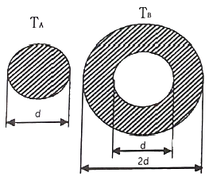
- 6.0
- 6.5
- 7.0
- 7.5
(정답률: 알수없음)
5. Ti의 특성에 대한 설명으로 틀린 것은?
- 열전도율이 높다.
- 내식성이 우수하다.
- 비중은 약 4.5 정도이다.
- Fe 보다 가벼운 경금속에 속한다.
(정답률: 알수없음)
6. 탄성한도 이내에서 가로 변형률과 세로 변형률과의 비를 의미하는 용어는?
- 곡률
- 세장비
- 단면수축률
- 프와송 비
(정답률: 알수없음)
7. 냉간가공의 특징으로 틀린 것은?
- 정밀한 형상의 가공면을 얻을 수 있다.
- 가공경화로 강도가 증가한다.
- 가공면이 아름답다.
- 연신율이 증가한다.
(정답률: 알수없음)
8. 회전수 1350 rpm으로 회전하는 용적형 펌프의 송출량 32ℓ/min, 송출압력이 40 kgf/cm2 이다. 이 때 소비 동력이 3kW 라면 이 펌프의 전 효율은?
- 60.1%
- 69.7%
- 75.3%
- 81.7%
(정답률: 알수없음)
9. 용접부의 시험을 파괴시험과 비파괴시험으로 분류할 때 비파괴시험이 아닌 것은?
- 인장시험
- 음향시험
- 누설시험
- 형광시험
(정답률: 알수없음)
10. 0.01mm까지 측정할 수 있는 마이크로미터에서 나사의 피치와 딤블의 눈금에 대한 설명으로 옳은 것은?
- 피치는 0.25 mm이고, 딤블은 50 등분이 되어 있다.
- 피치는 0.5 mm이고, 딤블은 100 등분이 되어 있다.
- 피치는 0.5 mm이고, 딤블은 50 등분이 되어 있다.
- 피치는 1 mm이고, 딤블은 50 등분이 되어 있다.
(정답률: 알수없음)
11. 주응력에 대한 설명으로 틀린 것은?
- 주응력은 전단응력이다.
- 평면응력에서 주응력은 2개이다.
- 주평면 상태하의 응력을 의미한다.
- 주응력 상태에서 수직응력은 최대와 최소를 나타낸다.
(정답률: 알수없음)
12. 유압 및 공기압 용어(KS B 0120)와 관련하여 다음이 설명하는 것은?
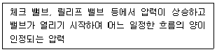
- 크래킹 압력
- 리시트 압력
- 오버라이드 압력
- 서지 압력
(정답률: 알수없음)
13. 회전수 1000rpm으로 716.2 N·m의 비틀림 모멘트를 전달하는 회전축의 전달동력(kW)은?
- 약 749.9
- 약 75.0
- 약 119
- 약 11.9
(정답률: 알수없음)
14. 균일 단면 봉재에 작용하는 수직응력에 대한 탄성에너지를 구하는 식으로 옳은 것은? (단, 탄성에너지 U, 인장하중 P, 봉재길이 L, 세로탄성계수 E, 변형량 δ, 단면적은 A 이다.)
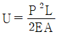
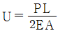
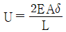
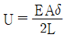
(정답률: 알수없음)
15. 체결용 기계요소인 코터에 대한 설명으로 틀린 것은?
- 코터의 자립조건에서 마찰각을 ρ, 기울기를 α라 할 때에 한쪽 기울기의 경우는 α ≦ 2ρ 이어야 한다.
- 코터의 기울기는 한쪽 기울기와 양쪽 기울기가 있다.
- 코터이음에서 코터는 주로 비틀림 모멘트를 받는다.
- 코터는 로드와 소켓을 연결하는 기계요소이다.
(정답률: 알수없음)
16. 모듈 5, 잇수 52인 표준 스퍼기어의 외경(mm)은?
- 250
- 260
- 270
- 280
(정답률: 알수없음)
17. 제동장치에서 단식 블록 브레이크의 제동력에 대한 설명으로 옳은 것은?
- 제동 토크에 반비례한다.
- 마찰 계수에 반비례한다.
- 브레이크 드럼의 지름에 비례한다.
- 브레이크 드럼과 블록사이의 수직력에 비례한다.
(정답률: 알수없음)
18. 나사에서 리드각은 나사의 골지름, 유효지름 및 바깥지름에서 각각 다르고 골지름에서 가장 크다. 나사의 비틀림각이 30° 이면 리드각은?
- 30°
- 45°
- 60°
- 90°
(정답률: 알수없음)
19. 공기압 기술에 대한 특징으로 틀린 것은?
- 작동 매체를 쉽게 구할 수 있다.
- 정밀한 위치 및 속도제어가 가능하다.
- 동력 전달이 간단하며 장거리 이송이 쉽다.
- 폭발과 인화의 위험이 적으며 환경오염이 없다.
(정답률: 50%)
20. 크거나 두꺼운 재료를 담금질했을 때 외부는 냉각속도가 빠르고 내부는 냉각속도가 느려서 재료의 내부로 들어갈수록 경도가 저하되는 현상은?
- 노치효과
- 질량효과
- 파커라이징
- 치수효과
(정답률: 알수없음)
2과목: 기계열역학
21. 고온 400℃, 저온 50℃의 온도 범위에서 작동하는 Carnot 사이클 열기관의 효율을 구하면 약 몇 % 인가?
- 43
- 46
- 49
- 52
(정답률: 알수없음)
22. 기관의 실린더 내에서 1kg의 공기가 온도 120℃에서 열량 40kJ를 얻어 등온팽창 한다고 하면 엔트로피의 변화는 얼마인가?
- 0.102 kJ/(kg·K)
- 0.132 kJ/(kg·K)
- 0.162 kJ/(kg·K)
- 0.192 kJ/(kg·K)
(정답률: 70%)
23. 압력이 일정할 때 공기 5kg을 0℃에서 100℃까지 가열하는데 필요한 열량은 약 몇 kJ 인가? (단, 비열(Cp)은 온도 T(℃)에 관계한 함수로 Cp(kJ/(kg·℃)) = 1.01+0.000079×T 이다.)
- 365
- 436
- 480
- 507
(정답률: 알수없음)
24. 다음의 물리량 중 물질의 최초, 최종상태 뿐 아니라 상태변화의 경로에 따라서도 그 변화량이 달라지는 것은?
- 일
- 내부에너지
- 엔탈피
- 엔트로피
(정답률: 알수없음)
25. 고열원 500℃와 저열원 35℃ 사이에 열기관을 설치하였을 때, 사이클당 10MJ의 공급열량에 대해서 7MJ의 일을 하였다고 주장한다면, 이 주장은?
- 열역학적으로 타당한 주장이다.
- 가역기관이라면 타당한 주장이다.
- 비가역기관이라면 타당한 주장이다.
- 열역학적으로 타당하지 않은 주장이다.
(정답률: 알수없음)
26. 수평으로 놓여진 노즐에서 증기가 흐르고 있다. 입구에서의 엔탈피는 3106 kJ/kg이고, 입구 속도는 13m/s, 출구 속도는 300m/s 일 때 출구에서의 증기 엔탈피는 약 몇 kJ/kg인가? (단, 노즐에서의 열교환 및 외부로의 일량은 무시할 수 있을 정도로 작다고 가정한다.)
- 3146
- 3208
- 2963
- 3061
(정답률: 알수없음)
27. 압력이 0.2MPa 이고, 초기 온도가 120℃인 1kg의 공기를 압축비 18로 가역 단열 압축하는 경우 최종온도는 약 몇 ℃ 인가? (단, 공기는 비열비가 1.4인 이상기체이다.)
- 676℃
- 776℃
- 876℃
- 976℃
(정답률: 알수없음)
28. Van der Waals 상태 방정식은 다음과 같이 나타낸다. 이 식에서 a/v2, b는 각각 무엇을 의미하는 것인가? (단, P는 압력, v는 비체적, R은 기체상수, T는 온도를 나타낸다.)
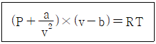
- 분자간의 작용력, 분자 내부 에너지
- 분자 자체의 질량, 분자 내부 에너지
- 분자간의 작용력, 기체 분자들이 차지하는 체적
- 분자 자체의 질량, 기체 분자들이 차지하는 체적
(정답률: 알수없음)
29. 그림과 같은 이상적인 열펌프의 압력(P)-엔탈피(h) 선도에서 각 상태의 엔탈피는 다음과 같을 때 열펌프의 성능계수는? (단, h1 = 155 kJ/kg, h3 = 593 kJ/kg, h4 = 827 kJ/kg 이다.)
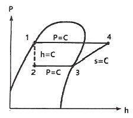
- 1.8
- 2.9
- 3.5
- 4.0
(정답률: 40%)
30. 단열 노즐에서 공기가 팽창한다. 노즐 입구에서 공기 속도는 60m/s, 온도는 200℃ 이며, 출구에서 온도는 50℃ 일 때 출구에서 공기 속도는 약 얼마인가? (단, 공기 비열은 1.0035 kJ/(kg·K) 이다.)
- 62.5 m/s
- 328 m/s
- 552 m/s
- 1901 m/s
(정답률: 알수없음)
31. 1MPa, 230℃ 상태에서 압축계수(compressibility factor)가 0.95인 기체가 있다. 이 기체의 실제 비체적은 약 몇 m3/kg 인가? (단, 이 기체의 기체상수는 461 J/(kg·K) 이다.)
- 0.14
- 0.18
- 0.22
- 0.26
(정답률: 알수없음)
32. 물질의 양을 1/2로 줄이면 강도성(강성적) 상태량(intensive properties)은 어떻게 되는가?
- 1/2로 줄어든다.
- 1/4로 줄어든다.
- 변화가 없다.
- 2배로 늘어난다.
(정답률: 알수없음)
33. 물 10kg을 1기압 하에서 20℃로부터 60℃까지 가열할 때 엔트로피의 증가량은 약 몇 kJ/K 인가? (단, 물의 정압비열은 4.18 kJ/(kg·K) 이다.)
- 9.78
- 5.35
- 8.32
- 14.8
(정답률: 알수없음)
34. 질량이 4kg인 단열된 강재 용기 속에 물 18L가 들어있으며, 25℃로 평형상태에 있다. 이 속에 200℃의 물체 8kg을 넣었더니 열평형에 도달하여 온도가 30℃가 되었다. 물의 비열은 4.187 kJ/(kg·K)이고, 강재(용기)의 비열은 0.4648 kJ/(kg·K)일 때 물체의 비열은 약 몇 kJ/(kg·K) 인가? (단, 외부와의 열교환은 없다고 가정한다.)
- 0.244
- 0.267
- 0.284
- 0.302
(정답률: 알수없음)
35. 피스톤-실린더에 기체가 존재하며 피스톤의 단면적은 5cm2이고 피스톤에 외부에서 500N의 힘이 가해진다. 이 때 주변 대기압력이 0.099 MPa 이면 실린더 내부 기체의 절대압력(MPa)은 약 얼마인가?
- 0.901
- 1.099
- 1.135
- 1.275
(정답률: 알수없음)
36. 이상기체의 상태변화에서 내부에너지가 일정한 상태 변화는?
- 등온 변화
- 정압 변화
- 단열 변화
- 정적 변화
(정답률: 알수없음)
37. 랭킨 사이클로 작동되는 증기동력 발전소에서 20MPa의 압력으로 물이 보일러에 공급되고, 응축기 출구에서 온도는 20℃, 압력은 2.339 kPa 이다. 이 때 급수펌프에서 수행하는 단위질량당 일은 약 몇 kJ/kg 인가? (단, 20℃에서 포화액 비체적은 0.001002 m3/kg, 포화증기 비체적은 57.79 m3/kg이며, 급수펌프에서는 등엔트로피 과정으로 변화한다고 가정한다.)
- 0.4681
- 20.04
- 27.14
- 1020.6
(정답률: 알수없음)
38. 비열이 0.9 kJ/(kg·K), 질량이 0.7kg으로 동일하며, 온도가 각각 200℃와 100℃인 두 금속 덩어리를 접촉시켜서 온도가 평형에 도달하였을 때, 총 엔트로피 변화량은 약 몇 J/K 인가?
- 8.86
- 10.42
- 13.25
- 16.87
(정답률: 알수없음)
39. 공기 표준 사이클로 운전하는 이상적인 디젤 사이클이 있다. 압축비는 17.5, 비열비는 1.4, 체절비(또는 분사단절비, cut-off ratio)는 2.1 일 때 이 디젤 사이클의 효율은 약 몇 % 인가?
- 60.5
- 62.3
- 64.7
- 66.8
(정답률: 알수없음)
40. 효율이 40%인 열기관에서 유효하게 발생되는 동력이 110 kW라면 주위로 방출되는 총 열량은 약 몇 kW 인가?
- 375
- 165
- 135
- 85
(정답률: 알수없음)
3과목: 자동차기관
41. 디젤엔진의 기계식 연료분사장치에서 연소과정에 영향을 주는 변수와 가장 거리가 먼 것은?
- 분사 방향
- 무효 분사 시간
- 연료 분사 시기
- 분사지속 기간과 분사율
(정답률: 70%)
42. 피스톤 지름 70mm, 피스톤 평균속도 15m/s 인 가솔린 엔진에 흡기밸브 유로의 면적이 12cm2일 경우 흡입가스의 평균유속(m/s)은 약 얼마인가?
- 58
- 48
- 8.4
- 7.0
(정답률: 알수없음)
43. 일산화탄소 및 탄화수소 분석기의 측정 전 준비사항으로 틀린 것은?
- 분석기는 형식 승인된 기기로서 최근 2년 이내에 정도검사를 필한 것이어야 한다.
- 분석기는 충분히 예열시켜 안정화시킨 후에 사용한다.
- 일반적으로 영점조정은 분석기를 충분히 예열시킨 후 측정농도 범위에서 영점을 맞춘다.
- 표준가스 주입은 측정농도 범위에 해당하는 표준가스 주입구를 통하여 지시값이 안정될 때까지 주입한다.
(정답률: 50%)
44. 디젤연료 첨가제 중 연소 소음과 유해 배기가스의 저감, 연료소비율 향상에 가장 적합한 첨가제는?
- 유동성 향상제
- 유성 향상제
- 세정제
- 착화 촉진제
(정답률: 알수없음)
45. 자동차용 왕복 피스톤기관의 이론 사이클에 대한 설명으로 틀린 것은?
- 압축비가 증가함에 따라 정적, 정압, 복합 사이클의 이론열효율은 모두 증가한다.
- 압축비의 증가폭과 이론열효율의 증가폭은 서로 정비례한다.
- 압축비가 같을 경우 이론열효율은 정적＞복합＞정압 사이클의 순서가 된다.
- 복합사이클의 이론열효율에서 압력비가 1이면 정압 사이클의 이론열효율이 된다.
(정답률: 알수없음)
46. 커먼레일 디젤엔진에서 파일럿 분사의 주요 목적으로 옳은 것은?
- 엔진을 냉각시킨다.
- DPF를 활성화시킨다.
- 착화지연시간을 길게 한다.
- 엔진의 진동을 저감시킨다.
(정답률: 알수없음)
47. 일로 변환된 에너지 중 동력손실을 제외하고 실제 크랭크 축에서 동력으로 사용할 수 있는 마력은?
- 지시마력
- SAE마력
- 연료마력
- 정미마력
(정답률: 알수없음)
48. 자동차 배출가스 저감장치와 처리 가능한 배출가스 성분과의 연결이 틀린 것은?
- EGR 장치 – NOx 저감
- 증발가스 제어장치 – HC 저감
- 블로바이 가스 제어장치 - NOx 저감
- 삼원 촉매 장치 – CO, HC, NOx 저감
(정답률: 알수없음)
49. 실린더 안지름이 120mm이고, 실린더 내의 연소압력이 55kgf/cm2 일 때 실린더 벽의 설계 두께(cm)는? (단, 실린더 벽의 허용응력은 1200kgf/cm2 이다.)
- 0.275
- 0.565
- 1.7
- 10.4
(정답률: 알수없음)
50. 전자제어 가변 밸브장치에서 운전 상태에 따른 CVVT(Continuously Variable Valve Timing)와 OCV(Oil Control Valve)의 듀티율에 대한 설명으로 틀린 것은?
- 목표 위치가 최대 지각 상태 : CVVT는 0%의 듀티율이 출력된다.
- 흡기 밸브를 진각 시킬 때 : 초기에 OCV는 100%의 듀티율로 출력되며 목표위치에 도달하면 CVVT는 50%의 듀티율이 출력된다.
- 목표 위치가 최대 진각 상태 : CVVT는 100%의 듀티율이 출력된다.
- 공회전 상태일 때 : OCV는 50% CVVT는 50%의 듀티율이 출력된다.
(정답률: 알수없음)
51. LPG(Liquefied Petroleum Gas)연료에서 증기압력에 대한 내용으로 틀린 것은?
- 액체량은 증기압력에 영향을 많이 받는다.
- 프로판과 부탄의 혼합비율에 따라 변한다.
- 온도가 높게 되면 증기압력도 높다.
- 프로판 성분이 많으면 증기압력이 높게 된다.
(정답률: 알수없음)
52. 전자제어 가솔린엔진에서 비동기 분사에 대한 설명으로 옳은 것은?
- 산소센서의 신호에 따라 분사하는 방식이다.
- 엔진 회전수와 흡입 공기량에 비례하여 분사하는 것을 말한다.
- 크랭크 각에 상관없이 급가속 시에 분사되는 일시적인 분사이다.
- 급감속할 때 연료를 차단하여 연료를 절약하기 위한 보조 분사이다.
(정답률: 알수없음)
53. 자동차 엔진의 성능곡선에서 A, B, C가 의미하는 것은? (단, F는 연료소비율, P는 축출력, T는 축토크이다.)
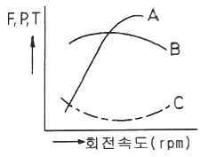
- A : F곡선, B : T곡선, C : P곡선
- A : T곡선, B : P곡선, C : F곡선
- A : T곡선, B : F곡선, C : P곡선
- A : P곡선, B : T곡선, C : F곡선
(정답률: 알수없음)
54. 점화순서가 1-3-4-2이고, 두 개의 점화코일을 사용하는 DL1 시스템 기관에서 2번 실린더가 점화할 때 동시에 점화되는 실린더는?
- 1번 실린더
- 3번 실린더
- 4번 실린더
- 1, 3, 4번 실린더
(정답률: 알수없음)
55. 전자제어 가솔린엔진에서 냉각수온 센서에 대한 설명으로 옳은 것은?
- 온도에 따라 저항이 변화하는 부특성 서미스터이다.
- 실린더 헤드에 부착되어 냉각 수온을 간접계측한다.
- 냉각수온 센서는 전기저항과 관계가 없다.
- 냉각수온 센서 신호에 의해 냉각수의 온도가 일정하게 유지된다.
(정답률: 알수없음)
56. 전자제어 가솔린 연료분사 엔진에서 연료압력 조정기의 리턴호스가 꺾였을 때의 현상을 설명한 것으로 가장 적합한 것은?
- 주행 중 시동이 즉시 꺼지게 된다.
- 과도한 연료 압력상승 시 체큽래브가 작동하여 연료압력을 조정한다.
- 연료압력 상승억제를 위해 릴리프 밸브가 열린다.
- 시동이 전혀 걸리지 않는다.
(정답률: 알수없음)
57. 밸브 스프링 장력이 클 때 발생하는 현상이 아닌 것은?
- 밸브 및 시트의 마멸 촉진
- 캠축의 캠 마멸 촉진
- 서징현상 발생
- 엔진 출력 손실
(정답률: 알수없음)
58. 엔진 베어링 재료로 사용되고 있는 켈밋합금에 대한 설명으로 틀린 것은?
- 주석 80~90%, 안티몬 3~12%, 구리 3~7%가 표준 조성이다.
- 고온, 고속, 고하중에 잘 견딘다.
- 내부식성이 낮다.
- 열전도성이 좋다.
(정답률: 알수없음)
59. 가솔린엔진, 자동변속기, 현가장치 등이 모두 전자제어식 차량일 때 공통으로 필요한 센서는?
- G 센서
- 차속센서
- 수온센서
- 휠 스피드 센서
(정답률: 알수없음)
60. 윤활유가 갖추어야 할 조건으로 틀린 것은?
- 점도가 적당할 것
- 인화점 및 자연 발화점이 낮을 것
- 열과 산에 대하여 안정성이 있을 것
- 카본 생성에 대한 저항력이 클 것
(정답률: 알수없음)
4과목: 자동차새시
61. 차량 자세제어 장치가 주로 제어하는 것은?
- 롤링
- 피칭
- 바운싱
- 요 모멘트
(정답률: 알수없음)
62. 일반적인 직렬형 하이브리드 자동차의 동력전달 과정으로 옳은 것은?
- 엔진 → 전동기 → 변속기 → 축전지 → 발전기 → 구동바퀴
- 엔진 → 변속기 → 축전지 → 발전기 → 전동기 → 구동바퀴
- 엔진 → 변속기 → 발전기 → 축전지 → 전동기 → 전동바퀴
- 엔진 → 발전기 → 축전지 → 전동기 → 변속기 → 구동바퀴
(정답률: 알수없음)
63. 자동차 주행저항을 계산하는 식에서 자동차 중량이 요구되지 않는 것은?
- 구름저항
- 구배저항
- 가속저항
- 공기저항
(정답률: 알수없음)
64. 앞 차축과 조향 너클의 설치방식에 대한 설명으로 옳은 것은?
- 엘리옷형 : 앞차축의 양끝 부분이 요크로 된 형식이며 이 요크에 조향 너클이 끼워지고 킹핀은 조향너클에 고정된다.
- 역 엘리옷형 : 앞차축 윗부분에 조향 너클이 설치되며 킹핀이 아래쪽으로 돌출되어 있다.
- 마몬형 : 앞차축 아래 부분에 조향 너클이 설치되며 킹핀이 위쪽으로 돌출되어 있다.
- 르모앙형 : 조향너클에 요크가 설치된 형식이며 킹핀은 앞차축에 고정되고 조향너클과는 부싱을 사이에 두고 있다.
(정답률: 알수없음)
65. 캐스터에 대한 설명으로 틀린 것은?
- 주행 중 조향 바퀴에 방향성을 부여한다.
- 조향된 바퀴를 직진 방향이 되도록 복원력을 준다.
- 좌·우 바퀴의 캐스터가 다른 경우 차량의 쏠림이 발생한다.
- 동일 차축에서 한 쪽 차륜이 반대 쪽 차륜보다 앞 또는 뒤로 처져있는 정도이다.
(정답률: 알수없음)
66. 공기 브레이크에서 브레이크 페달에 의해 개폐되며 페달이 이동된 양에 따라 공기탱크 내의 압축공기를 도입하여 제동력을 조절하는 것은?
- 브레이크 밸브
- 퀵 릴리스 밸브
- 릴레이 밸브
- 언로더 밸브
(정답률: 알수없음)
67. 전자제어 자동변속기의 제어모듈(TCU)에 입력되는 신호가 아닌 것은?
- 입·출력 속도 센서
- 인히비터 스위치
- 연료 온도 센서
- 브레이크 스위치
(정답률: 알수없음)
68. 승용차 타이어의 규격이 'P2⑤/60R 15 96H'일 경우 타이어의 단면 높이(mm)는?
- 2⑤
- 123
- 60
- 15
(정답률: 알수없음)
69. 전자제어 자동변속기 차량에서 토크 컨버터의 유체를 통해 동력을 전달시키지 않고 펌프와 터빈을 직접 구동하는 기능은?
- 홀드(hold)기능
- 록업(lock up)기능
- 토션 댐퍼(torsion damper)기능
- 터빈 브레이커(turbine breaker)기능
(정답률: 90%)
70. 진공 부스터식 브레이크 장치를 시험기 없이 시험하는 방법과 판정에 대한 내용으로 틀린 것은?
- 엔진시동을 정지한 상태에서 브레이크 페달을 몇 번 밟아주고, 밟은 상태에서 엔진 시동을 걸어서 페달이 약간 내려가면 진공부스터의 기능은 정상이다.
- 엔진을 시동하여 1~2분 후에 시동을 끄고, 페달을 1~4회 밟을 때 첫 회의 페달행정과 4회의 페달행정이 변하지 않고 일정하면 진공부스터의 기밀기능은 정상이다.
- 엔진을 시동하여 1~2분 후에 페달을 밟은 상태에서 시동을 끄고 30초 정도 페달을 밟은 상태로 유지하여 페달 높이가 변화하지 않으면 진공부스터의 부하기밀기능은 정상이다.
- 엔진을 시동하여 1~2분 후에 페달을 밟은 상태에서 시동을 끄고 10초 정도 페달을 밟은 상태로 유지하여 페달 높이가 내려가면 마스터 실린더 또는 진공부스터 이상이다.
(정답률: 알수없음)
71. 브레이크 오일의 구비조건에 대한 설명으로 옳은 것은?
- 빙점이 높아야 한다.
- 비윤활성이어야 한다.
- 점도지수가 낮아야 한다.
- 비등점이 높아야 한다.
(정답률: 알수없음)
72. 자동변속기 차량에서 크랭킹이 안 되는 원인으로 틀린 것은?
- 킥다운 스위치 단선 시
- 변속레버 D위치 선택 시
- P, N스위치 접점 소손 시
- 인히비터 스위치 커넥터 탈거 시
(정답률: 알수없음)
73. 전자식 케이블타입 주차브레이크(Electronic Parking Brake)의 구성품 중 케이블의 장력을 측정하여 자동차의 조건 및 경사도에 따라 적절한 제동력이 가해지도록 하는 것은?
- TCU
- EPB 스위치
- 제동력 감지센서
- 주차 케이블 구동기어
(정답률: 알수없음)
74. 수동변속기 클러치 디스크에서 비틀림 코일스프링의 주요 역할로 옳은 것은?
- 클러치판의 파손방지
- 클러치스프링의 장력 보완
- 클러치 접속 시 회전충격 흡수
- 클러치 면이 미끄러지는 것을 방지
(정답률: 알수없음)
75. 유압식 브레이크 장치에서 잔압의 유지 목적으로 거리가 먼 것은?
- 캐비테이션 방지
- 브레이크 작동 지연 방지
- 회로 내에 공기 침입을 방지
- 휠 실린더 내 오일 누출 방지
(정답률: 알수없음)
76. 종감속 장치에서 구동피니언 잇수 7, 링기어 잇수 28, 추진축 2000rpm 일 때 왼쪽 바퀴가 300rpm 이었다면 오른쪽 바퀴의 회전수는?
- 500rpm
- 600rpm
- 700rpm
- 800rpm
(정답률: 70%)
77. 조향핸들의 유격이 커지는 원인으로 틀린 것은?
- 조향기어 백래시의 조정 불량
- 스티어링 기어의 마모 증대
- 조향 링키지의 마모
- 타이어 트레드 마모
(정답률: 알수없음)
78. 바퀴의 미끄럼 및 구동력과 관련하여 미끄럼률을 구하는 식은? (단, V : 자체의 주행속도, Vw : 바퀴의 회전속도이다.)
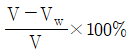
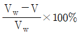
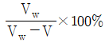
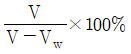
(정답률: 알수없음)
79. 복륜 자동차의 윤간거리에 대한 설명으로 옳은 것은?
- 좌·우 바퀴가 접하는 수평면에서 내측 바퀴 중심간의 거리
- 좌·우 바퀴가 접하는 수평면에서 외측 바퀴 중심간의 거리
- 좌·우 바퀴가 접하는 수평면에서 복륜 중심간의 거리
- 좌·우 바퀴가 접하는 수평면에서 내측 바퀴의 최외곽 중심간의 거리
(정답률: 알수없음)
80. 자동차규칙상 주제동장치의 제동능력 및 조작력 기준에 대한 설명으로 틀린 것은?
- 측정자동차의 상태 : 공차상태의 자동차에 운전자 1인이 승차한 상태
- 좌·우바퀴의 제동력의 차이 : 당해 축중의 5% 이하
- 제동력의 복원 : 브레이크페달을 놓을 때에 제동력이 3초 이내에 당해 축종의 20% 이하로 감소될 것
- 최고속도가 매시 80km 미만이고 차량총중량이 차량중량이 1.5배 이하인 자동차의 각축의 제동력의 합 : 차량총중량의 40% 이상
(정답률: 알수없음)
5과목: 자동차전기
81. ECU에서 제어하는 접점식 릴레이에 다이오드를 부착한 이유는?
- 정밀한 제어를 위해
- 전압을 상승하기 위해
- 점화신호 오류 방지를 위해
- 서지전압에 의한 ECU 보호를 위해
(정답률: 알수없음)
82. 전기자동차 및 플러그인하이브리드자동차의 복합 1회충전 주행거리(km) 산정방법으로 옳은 것은? (단, 자동차의 에너지소비효율 및 등급표시에 관한 규정에 의한다.)
- 0.55×도심주행 1회충전 주행거리+
0.45×고속도로주행 1회충전 주행거리 - 0.45×도심주행 1회충전 주행거리+
0.55×고속도로주행 1회충전 주행거리 - 0.5×도심주행 1회충전 주행거리+
0.5×고속도로주행 1회충전 주행거리 - 0.6×도심주행 1회충전 주행거리+
0.4×고속도로주행 1회충전 주행거리
(정답률: 알수없음)
83. 차체 자세제어시스템의 요 모멘트 제어와 관련된 사항으로 틀린 것은?
- 오버스티어링 시에 제어한다.
- 언더스티어링 시에 제어한다.
- 자기진단기를 이용한 강제구동 시 제어한다.
- 요 모멘트가 일정값 이상 발생하면 제어한다.
(정답률: 알수없음)
84. 수소연료전지차의 에너지소비효율 라벨에 표시되는 항목이 아닌 것은? (단, 자동차의 에너지소비효율 및 등급표시에 관한 규정에 의한다.)
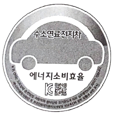
- CO2 배출량
- 1회충전 주행거리
- 도심주행 에너지소비효율
- 고속도로주행 에너지소비효율
(정답률: 알수없음)
85. 점화플러그에 카본이 심하게 퇴적되어 있는 원인으로 틀린 것은?
- 장시간 저속 주행
- 점화 플러그의 과냉
- 혼합기가 너무 희박함
- 연소실에 오일이 올라옴
(정답률: 알수없음)
86. 하이브리드 자동차에서 에너지 저장 시스템의 종류로 틀린 것은?
- 펌프(pump) 저장 시스템
- 플라이휠(flywheel) 저장 시스템
- 축압(accumulator) 저장 시스템
- 커패시터(capacitor) 저장 시스템
(정답률: 알수없음)
87. 하이브리드 자동차의 연비 향상 요인이 아닌 것은?
- 주행 시 자동차의 공기저항을 높여 연비가 향상된다.
- 정차 시 엔진을 정지(오토 스톱)시켜 연비를 향상시킨다.
- 연비가 좋은 영역에서 작동되록 동력분배를 제어한다.
- 희생 제동(배터리 충전)을 통해 에너지를 흡수하여 재사용한다.
(정답률: 80%)
88. 스마트 에어백의 구성부품이 아닌 것은?
- 프리크러쉬 센서(pre-crach sensor)
- 충돌감도 센서(crash severity sensor)
- 요 레이트 센서(yaw rate sensor)
- 시트위치 센서(seat position sensor)
(정답률: 알수없음)
89. 자동차 에어백에 대한 설명으로 틀린 것은?
- 에어백 시스템은 좌석벨트의 보조 장치로서 운전자를 보호하기 위한 안전장치이다.
- 자동차가 정면 충돌 시 요레이트 센서가 이를 감지하여 에어백이 작동한다.
- 에어백 모듈은 가스발생기, 에어백, 클록 스프링 등으로 구성된다.
- 에어백 경고등은 점화스위치를 'ON' 시키면 일정 시간 동안 점등되었다가 소등된다.
(정답률: 알수없음)
90. 기동전동기의 시동 소요 회전력에 대한 설명으로 틀린 것은?
- 플라이휠의 링기어 잇수가 증가하면 소요회전력은 작아진다.
- 기동 전동기의 피니언 잇수가 증가하면 소요회전력은 커진다.
- 엔진의 회전저항이 증가하면 소요회전력은 커진다.
- 압축비가 큰 엔진일수록 소요 회전력은 작아진다.
(정답률: 알수없음)
91. 방향지시등 회로에서 뒤 좌측 방향지시등 전구의 필라멘트가 단선되었을 때의 변화는?
- 앞 좌측 전구에 가해지는 전압이 높아진다.
- 전구의 단선과 회로의 저항변화는 무관하다.
- 좌측 방향지시등 회로의 저항이 감소한다.
- 좌측 방향지시등 회로의 저항이 증가한다.
(정답률: 알수없음)
92. 자동차 데이터 통신중에 하나의 선이라도 단선되면 두 배선의 차등전압을 알 수 없어 통신불량이 발생하는 통신방식은?
- A-CAN 통신
- B-CAN 통신
- C-CAN 통신
- D-CAN 통신
(정답률: 알수없음)
93. 에어백 시스템의 인플레이터(에어백 모듈) 정비 시 유의사항으로 틀린 것은?
- 차량 도장건조 작업 시에는 탈거 후에 하는 것이 좋다.
- 인플레이터의 배선 측이 위로 가도록 보관한다.
- 취급 시 충격을 가하지 않도록 한다.
- 화기 근처에 놓지 말아야 한다.
(정답률: 60%)
94. 하이브리드 자동차에서 리튬 이온 폴리머 고전압 배터리는 9개의 모듈로 구성되어 있고, 1개의 모듈은 8개의 셀로 구성되어 있다. 이 배터리의 전압은? (단, 셀 전압은 3.75V 이다.)
- 30V
- 90V
- 270V
- 375V
(정답률: 알수없음)
95. 그림과 같이 12V 배터리 2개를 직렬로 연결하여 정전류(표준) 충전을 할 때 적합한 전압과 전류는?
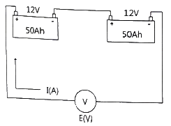
- 12V, 5A
- 24V, 5A
- 12V, 20A
- 24V, 20A
(정답률: 알수없음)
96. 엔진이 고전압 배터리의 충전에만 사용되고 동력전달용으로는 사용되지 않는 하이브리드 차량의 형식은?
- 직렬형
- 병렬형
- 복합형
- 직·병렬형
(정답률: 알수없음)
97. 전류계의 측정범위가 1mA이며, 내부저항은 200Ω이다. 이 전류계에 분류기를 연결하여 10mA 범위 내의 전류를 측정하고자 할 때 분류기의 알맞은 저항(Ω)은?
- 0.2
- 2.2
- 22.2
- 222.2
(정답률: 알수없음)
98. 전압과 전류 그리고 저항에 대한 설명으로 틀린 것은?
- 반도체의 경우 온도가 높아지면 저항이 높아진다.
- 저항이 크고, 전압이 낮을수록 전류는 적게 흐른다.
- 도체의 단면적이 클수록 저항은 낮아진다.
- 도체의 경우 온도가 높아지면 저항은 높아진다.
(정답률: 알수없음)
99. 교류신호를 측정한 그림에서 디지털 멀티테스터로 측정한 값이 80V라고 할 때 오실로스코프로 측정한 P-P 전압은?
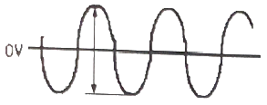
- 약 110V
- 약 150V
- 약 180V
- 약 226V
(정답률: 40%)
100. 고압축비 고속기관에 사용되는 점화플러그는?
- 열형
- 냉형
- 중간형
- 초냉형
(정답률: 알수없음)
이는 주철이 탄소 함유량이 높아서 더욱 단단하고 강한 성질을 가지기 때문입니다. 또한, 주조성이 우수하여 복잡한 형상으로 제작이 가능하며, 절삭성 및 내마모성이 우수하다는 것도 주철의 특징 중 하나입니다.